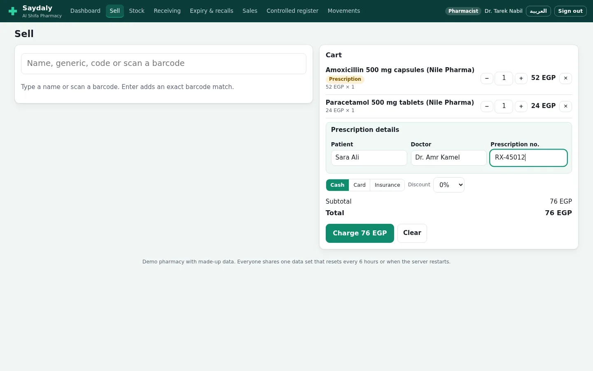
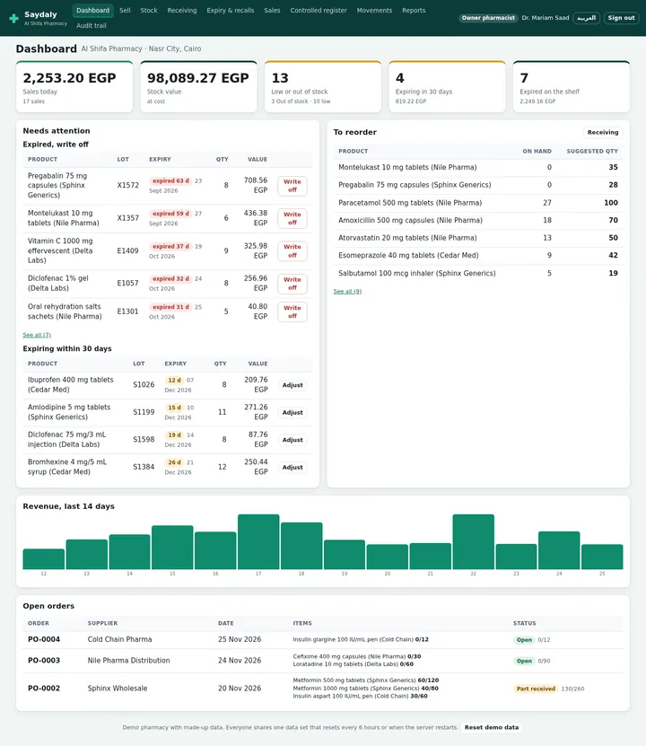
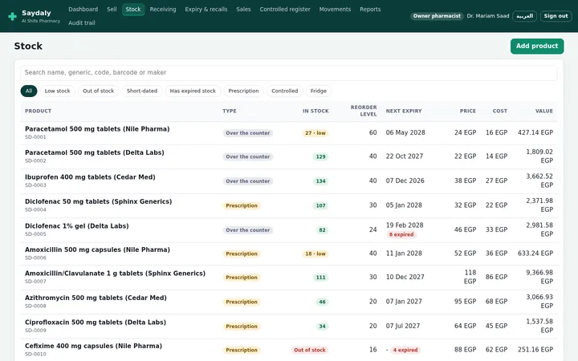
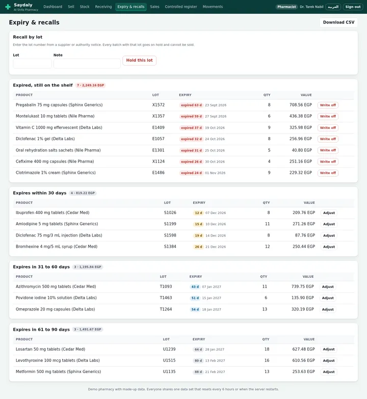
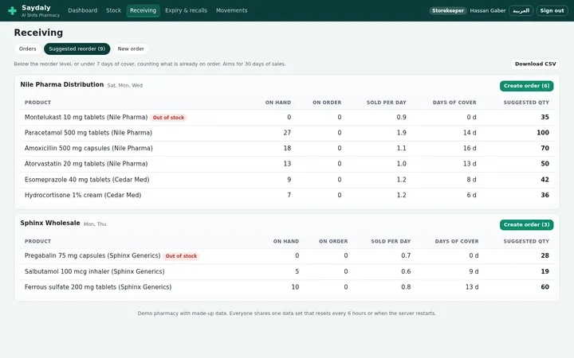
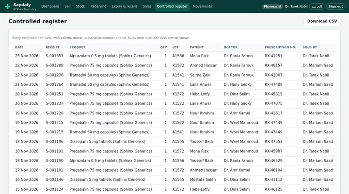
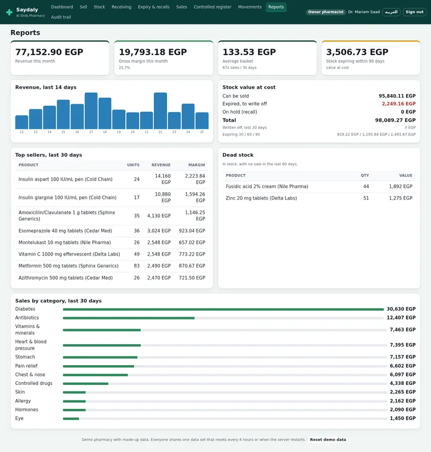
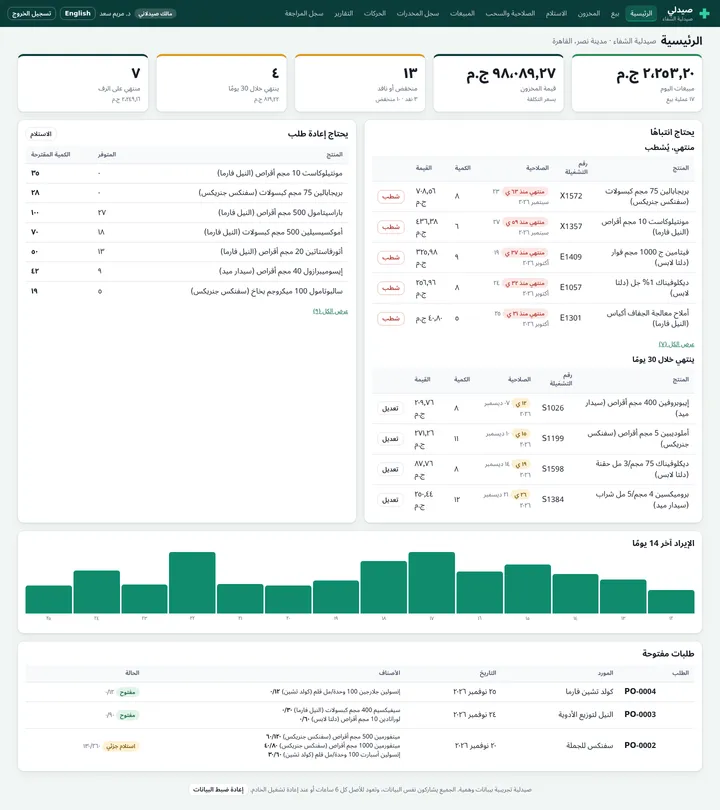
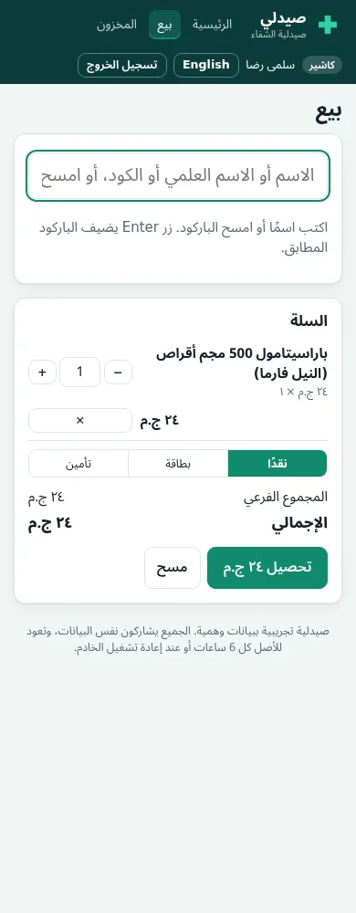

PORTFOLIO DEMO / BUILT / LIVE DEMO
Saydaly
Sell the oldest batch first. Never sell what has expired.

ACTUAL BUILDSaydaly · Point of sale. Fictional pharmacy and demo data.
The problem
A small pharmacy loses money quietly. A box expires on the back of a shelf. A recall notice arrives and nobody knows which customers got that lot. Stock runs out of a fast mover while a slow one piles up. Prescription and controlled items depend on the person at the counter remembering the rules.
What was built
An inventory and point-of-sale system with four roles. Every delivery is recorded by lot and expiry date, and a sale always takes from the batch that expires first. Expired and held batches cannot be sold. Prescription items need the patient, the doctor and a prescription number, and only a pharmacist can sell them. Controlled items are capped per prescription and written to a register. Cashiers cannot give discounts, and pharmacists are capped at 20%. Reorder suggestions look at recent sales and what is already on order, and turn into a purchase order per supplier. Receiving checks that the lot and expiry are entered and that the shelf life is at least 90 days. A recall puts every batch of a lot on hold and shows how many units were already sold. The storekeeper can count and write off stock within limits, with no access to controlled items. The owner sees margin from the real batch cost, stock value, expiry buckets and dead stock. Everything is Arabic right-to-left or English.
What changes for the pharmacy
Before. Expiry dates live on the boxes. Reordering is done by looking at the shelf. A recall means checking paper by hand. Rules for prescription and controlled items depend on memory.
After. The oldest batch is sold first and expired stock cannot reach the counter. The expiry report shows what to discount or return before it is lost. The reorder list is ready each morning. A recalled lot is on hold in one step with the sold units traced. The rules are enforced by the system, so a cashier cannot skip them.
Why it matters to a pharmacy owner
Expired stock is cost that was already paid, and a missed recall is a risk to patients and to the license. This system turns those into lists and rules that run every day. These are the situations the demo is built to show. They are not measured results from a real pharmacy.
The approach
No framework: plain JavaScript pages, one serverless API function and one logic file that holds every rule (first-expiry-first-out, discount caps, prescription and controlled limits, receiving checks, reorder quantities, recall tracing, write-off and count limits, who may see what). The same file runs in the API, the browser and the tests. Permissions are enforced on the server. Dates in the seed data are relative to now, so the demo always looks current.
The result
A live demo anyone can open. Sign in as owner (PIN 1111), pharmacist (2222), cashier (3333) or storekeeper (4444); the PINs are on the sign-in screen. The sample pharmacy has 52 products, about 105 batches, 4 suppliers and 60 days of sales history. Verification: 29 business-rule tests and 72 browser and API checks run against the live site, covering every role, permission limits, selling and prescription rules, receiving, recalls, Arabic RTL, a phone layout and hostile text shown as plain text.
Evidence & production limits
One shared demo workspace: everyone sees and changes the same data. State is kept in server memory only, so it resets about every six hours and whenever the server instance restarts. Sign-in is a PIN printed on the sign-in screen, so it must not hold real patient or sales data. The pharmacy, products, prices and people are fictional, and the sales history before the last 7 days is illustrative daily totals, so recall tracing covers 7 days. Receipts are internal numbers, not tax invoices.
Known gaps: no database, no real authentication or password reset, no official drug price list, no interaction or dose checking, no e-invoicing, insurance claims or barcode scanner integration, no supplier messaging, one pharmacy and one time zone. The hosting account's Blob storage quota was suspended at the time of writing, which is why the demo uses memory. Direction, scope and delivery: Nada Gamal.
Next chapter
Real accounts with hashed passwords, a proper database, the official price list, a barcode scanner, tax-compliant receipts and supplier ordering by WhatsApp or email would be the next implementation steps.
Inside the build
Open any preview to see the full capture. Captures show test or demonstration content. All records shown are demonstration content, not evidence of client use.







